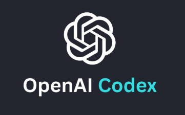
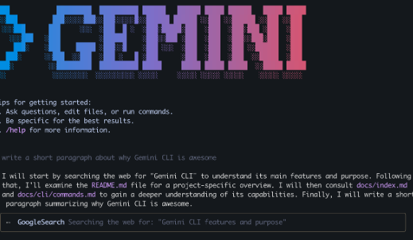
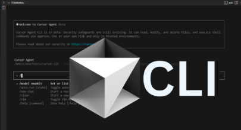

Claude Code for Everyone
שירי זוהר · AI Corporate Apps Lead, monday.com
⬇ הורידו את המצגת כ-PDFנעים להכיר שירי זוהר
לא מתכנתת, אבל מייצרת כלים פרקטיים
מובילה את תחום אפליקציות ה-AI הארגוניות ב-monday.com. משתמשת ב-Claude Code כל יום — לא רק לקוד.
מה אני עושה איתו
מחקר, ניתוח נתונים, מצגות, אוטומציות של משימות חוזרות.
המטרה שלי
שתצאו מפה עם ידע, כלים ובסיס טוב ופרקטי שתוכלו להמשיך ולבנות איתו כל מה שתרצו.
מה יוצאים איתו בסוף היום
לא "ידע על AI" — מכונה שעובדת בשבילכם, שבנויה מחלקים שנוסיף לאורך היום:
חמישה קורסים, מעבדה שבועית, מבחנים שמתנגשים. בסוף היום ל-Claude של נועה יש סילבוסים, תוכנית למידה והוראות קבועות — והוא כבר לא צריך שיסבירו לו מחדש.
היום: 4 מודולים, כל אחד נגמר בתוצר
כל החומרים במקום אחד
סרקו עכשיו ושמרו: העמוד של הקורס עם הקישורים, ההכנות והחומרים ליום הזה ולמחר.
כדאי לפתוח אותו בטלפון ולהשאיר פתוח לאורך היום.
תוכנית הקורס
יסודות
- מה זה סוכן
- כלים, זיכרון, משימות
- התקנה והפעלה
מה זה סוכן, ו-Claude Code שרץ על המחשב שלכם.
הנדסת הקשר
- פרומפטים
- מצבי הרשאה
- CLAUDE.md
- תיקיית .claude/
לעצב איך Claude מתנהג בין שיחות.
יכולות
- Skills
- חיבורי MCP
- חיפוש וקריאה ברשת
לחבר את Claude לכלים שלכם ולרשת.
בנייה
- סוכני-משנה
- אוטומציה
- משימות מתוזמנות
- אפליקציות אמיתיות
לכוון את הסוכן שיבנה דברים שעובדים.
הפצה
- דיבוג
- שיתוף
- האקוסיסטם
להפוך את העבודה לניידת ולדעת מה הלאה.
בדיקת מערכת: 3 דקות
- פתחו את Claude Code Desktop — השם שלכם מופיע? אתם מחוברים.
- פתחו את VS Code ← לוח Claude Code בצד ← שלחו "שלום".
- קיבלתם תשובה בשניהם? ✅ מוכנים.
נדרש מנוי Claude Pro ומעלה — Claude Code לא זמין בחשבון החינמי.
מצ׳אט לסוכן
מה זה Claude Code, במה הוא שונה מ-ChatGPT בדפדפן, ולמה זה משנה לכם.
מודל שפה (LLM): במה הוא חזק ואיפה הוא מפספס
חזק ב…
לכתוב, לסכם, להסביר, לתרגם ולארגן — הרבה טקסט, מהר.
מפספס ב…
אין לו זיכרון או ידע בין השיחות שאתם מנהלים איתו.
הוא לא דאטהבייס ולא מחפש דברים — הוא מודל סטטיסטי לחיזוי וניבוי הקשרים.
הוא לא מחשב אלא חוזה, ולכן לא תמיד יגיע לחישובים נכונים.
לבד הוא לא יכול…
לפתוח קובץ, לשמור, או להריץ משהו. הוא רק מחזיר טקסט.
אין לו חיבור לקבצים, למייל ולאינטרנט עדכני מהרגע.
כמו סטודנט מבריק במבחן בלי מחברת: מדבר יפה, אבל אפשר לסמוך עליו רק כשנותנים לו חומר ובודקים אותו.
מה מודלים מפספסים, ולמה
שני מצבי כשל ששווה להכיר בשמם — שניהם יחזרו בהמשך הקורס.
הזיות (Hallucinations)
כשהוא לא יודע, הוא לא עוצר: הוא ממציא תשובה שנשמעת נכון.
הפתרון: הקשר נכון + כלים שבודקיםחלון ההקשר (Context window)
הוא רואה רק כמות מוגבלת של טקסט. מה שמחוץ לחלון לא קיים בשבילו.
הפתרון: מביאים לו רק את מה שחשוב⚡ נסו עכשיו: בקשו מצ׳אט לסכם מאמר שהוא כנראה לא מכיר, ובדקו אם הוא מודה שהוא לא יודע.
אז מה ההבדל בין Agent למודל שפה?
מודל לא יכול לפעול, בעוד שאייג׳נט כן.
טקסט נכנס, טקסט יוצא.
הוא מייצר שפה. לבדו הוא לא קורא את הקבצים שלכם, לא פותח תיקיות, לא מריץ פקודות ולא זוכר את השיחה של אתמול.
עוטף את המודל כדי שיוכל לפעול.
חושב ופועל (Reasoning & Acting), עם או בלי התערבות אדם.
הכירו את קלוד (Claude)

Claude Chat
צ׳אט בדפדפן, באפליקציה ובטלפון. שאלות, כתיבה וניתוח — העבודה נשארת בחלון השיחה.

Cowork
סוכן באפליקציית Desktop שעובד על תיקייה במחשב שלכם — עבודת ידע בלי קוד.

Extensions
Claude בתוך Chrome ו-Excel — עוזר בכלים שאתם כבר עובדים בהם.

Claude API
למפתחים: מחברים את Claude לקוד, למוצרים ולאוטומציות. לא נעסוק בו.

Claude Code
סוכן שעובד על הקבצים שלכם — ב-Desktop, ב-VS Code או בטרמינל. כאן נבלה את הקורס.
ההבדל המרכזי: איפה Claude עובד, ומה הוא יכול לגעת בו.
צ׳אט עונה. סוכן עושה.
| צ׳אט בדפדפן | Claude Code (סוכן) | |
|---|---|---|
| מה הוא רואה | רק מה שהדבקתם | את כל התיקייה שפתחתם |
| מה הוא מחזיר | טקסט, תמונות, אודיו ווידאו שאתם מעתיקים | קבצים שהוא יוצר ועורך בעצמו |
| משימה ארוכה | אתם מפרקים לשלבים | הוא מתכנן ומבצע שלב אחרי שלב |
| זיכרון | נגמר עם השיחה | קובץ הוראות שנקרא בכל פעם |
⚡ נסו עכשיו: פתחו claude.ai ושאלו "מה יש בתיקיית ההורדות שלי?" — שימו לב שהוא לא יכול לדעת.
אותה בקשה, שתי ארכיטקטורות
דמיינו את הבקשה: ״סכם את קובצי ה-PDF בתיקיית ההורדות שלי״.
אין גישה לקובץ.
הוא יבקש מכם להדביק את התוכן בצ׳אט. המודל חי מאחורי דף אינטרנט; הוא רואה רק מה שהעתקתם אליו.
פותח את התיקייה ישירות.
קורא כל PDF, כותב את הסיכום, ושומר אותו בחזרה בדיסק אם ביקשתם. בלי הדבקות ובלי צילומי מסך — לסוכן יש גישה לקבצים במחשב שלכם.
סוכן = מוח + 3 רגליים
כלים
הידיים — קריאת קבצים, כתיבה, חיפוש, הרצת פקודות.
זיכרון
מה שנשאר בין שיחות — CLAUDE.md (מודול 3).
בתוך תור אחד, לאורך שיחה, ובין פרויקטים. שלוש שכבות: היסטוריית השיחה, זיכרון ארוך טווח, וזיכרון פרויקט שחי יחד עם התיקייה.
משימות
סוכן טוב מפרק מטרה לצעדים ועובד עליהם אחד אחרי השני, במקום לבצע רק את ההוראה הראשונה שקיבל.
כולם נשענים על המוח — המודל (Claude). צ׳אט רגיל = מוח בלי ידיים ובלי זיכרון.
Why Claude Code?
גם לאחרים יש סוכן שעובד על הקבצים שלכם. אותו רעיון, כלים שונים.

OpenAI Codex
הסוכן של OpenAI.

Gemini CLI
הסוכן של Google, בשורת הפקודה.

Cursor CLI
הסוכן של Cursor, בשורת הפקודה.
- מתאים גם למי שלא כותב קוד: אפליקציית Desktop ולוח ב-VS Code.
- הרעיון זהה בכל הכלים, אז מה שלומדים כאן עובר הלאה.
- כל מה שבסילבוס נלמד על כלי אחד: CLAUDE.md, הרשאות, Skills, MCP וסוכני-משנה.
Claude Code
שלושת המודלים המובילים כרגע, ומתי להשתמש בכל אחד. ככל שהמספר גבוה יותר, המודל מתקדם יותר.
Claude Code
סוכן שעובד על הקבצים שלכם — ב-Desktop, ב-VS Code או בטרמינל.
Sonnet 5.5
מתי: רוב העבודה — סיכומים, ארגון קבצים, עריכה ומשימות חוזרות.
מהיר וזול יותר.
Opus 5.5
מתי: ניתוח מורכב, מסמכים ארוכים, כתיבה מדויקת ותכנון בכמה שלבים.
חזק ויציב לעבודה רצינית.
Fable 5.1
מתי: המשימות הקשות באמת — מחקר עמוק ועבודה ארוכה ועצמאית.
הכי חזק, אבל איטי ויקר יותר.
כלל אצבע: מתחילים בקטן ועולים רק כשצריך. מחליפים מודל באמצע שיחה עם /model.
המודל הוא המנוע. Claude Code הוא הרכב.
המודל (Claude)
אותו מנוע שאתם מכירים מ-claude.ai. לבד — הוא יכול רק לדבר.
ה-Harness (Claude Code)
המעטפת שנותנת למנוע הגה, גלגלים ובלמים: גישה לקבצים, כלים, הרשאות וזיכרון.
לכן היום לא נלמד "לדבר יפה עם AI" — נלמד לנהוג ברכב.
הלולאה: ככה סוכן עובד
עכשיו נראה את הלולאה הזאת על תיקייה אמיתית.
לפני: כל הסיכומים של נועה בתיקייה אחת
תסדר לי את הסיכומים לפי קורס.
הכול ביחד, בלי סדר. חלק מהשמות לא מסגירים לאיזה קורס הקובץ שייך.
מה Claude עושה: חושב, פועל, בודק
מתכנן
צריך להבין לאיזה קורס כל קובץ שייך.
מחפש
מוצא את 9 הקבצים בתיקייה.
קורא
פותח את הקבצים ששמם לא ברור (lec5_notes, IMG_2041) ומזהה קורס לפי התוכן.
יוצר תיקיות
עיבוד אותות דיגיטלי, מעגלים אנלוגיים 3, תקשורת דיגיטלית.
מעביר
מעביר כל קובץ לתיקייה של הקורס שלו.
בודק
בודק שלא נשאר אף קובץ בחוץ.
אחרי: כל סיכום בתיקייה של הקורס שלו
עיבוד אותות דיגיטלי
מעגלים אנלוגיים 3
תקשורת דיגיטלית
הכלים שיש ל-Claude בידיים
Read
קורא קבצים: PDF, Word, טבלאות, תמונות, קוד.
Write / Edit
יוצר קבצים חדשים ועורך קיימים — במקום שתעתיקו.
Search
מוצא קבצים ומילים בתוך התיקייה, גם כשיש מאות.
Bash
מריץ פקודות במחשב — המרות, חישובים, סקריפטים.
Web
מחפש ברשת וקורא דפים — למשל, מאמר חדש.
ואתם מאשרים
כל פעולה רגישה מחכה לאישור שלכם (מודול 3).
איפה זה רץ? אותו סוכן, שלוש דלתות
Desktop App
הכי פשוט להתחיל. בזה נעבוד היום.
VS Code
Panel בתוך העורך — רואים עץ קבצים ושינויים מסומנים.
Terminal
למי שכבר מרגיש בבית בשורת פקודה.
CLAUDE.md, הרשאות, Skills וסוכנים עובדים בכל השלוש. משנה רק הממשק.
התיקייה היא העולם של Claude
- פותחים תיקייה ← Claude עובד בתוכה
- מה שלא בתיקייה — הוא לא ימצא לבד
- תיקייה מסודרת = תשובות טובות יותר
- אחת לכל "עולם": לימודים, תזה, מעבדה
⚡ נסו עכשיו: צרו על שולחן העבודה תיקייה בשם technion-ai — בה נעבוד היום.
אותה בקשה, בצ׳אט
נועה מדביקה את הסילבוס של "עיבוד אותות דיגיטלי" ומבקשת תוכנית לימוד.
מקבלת טקסט כללי. מעתיקה לקובץ. מגלה שהוא לא יודע מתי המבחנים שלה בשאר הקורסים.
אותה בקשה, ב-Claude Code
נועה פותחת את technion-ai/ ומבקשת אותו דבר.
Claude קורא את כל הסילבוסים, מזהה התנגשויות במבחנים ושומר study-plan.md בתיקייה.
בקשה טובה לסוכן: 4 רכיבים
מטרה
מה אני רוצה שיקרה בסוף?
הקשר
איזה קבצים רלוונטיים? מה הוא צריך לדעת?
גבולות
מה לא לגעת בו? כמה זמן ביום?
פורמט
איזה קובץ, באיזה מבנה, איפה לשמור?
Study Plan Generator — בזמן אמת
- פותחת את
technion-ai/ב-Claude Code Desktop - גוררת 3 סילבוסים (PDF) לתיקיית
courses/ - מדביקה את הבקשה מהשקף הקודם
- צופים יחד: מה הוא קורא, מה הוא מחליט, מה הוא כותב
שימו לב לרגעים שבהם הוא עוצר ושואל — נחזור לזה במודול 3.
מה בעצם קרה בדמו?
לא כתבנו אף שורת קוד. לא העתקנו כלום. התוצר נמצא בתיקייה — ואפשר לבקש לעדכן אותו מחר.
בודקים שזה נקלט
technion-ai/. הסיכום של "תקשורת דיגיטלית" שמור אצלה ב-Downloads. מה יקרה כשהיא תבקש לסכם אותו?בונים אפליקציית טריוויה
בקשה אחת בלוח Claude Code. כ-30 שניות לקובץ HTML עובד בתיקייה.
שימו לב: Claude קורא קודם את התיקייה (כלים), מציע תוכנית (משימות), ואז כותב את הקובץ (עוד כלים).
פותחים את לוח Claude Code
- פתחו את VS Code ← File ← Open Folder ← בחרו את
claude-course - לחצו על סמל Claude Code בסרגל הצד השמאלי (אם מבקשים, היכנסו עם חשבון Anthropic)
- בתיבת הצ׳אט בתחתית הלוח הקלידו: שלום Claude. באיזו תיקייה אתה נמצא?
- לחצו Enter וחכו לתשובה
claude-course.משתמשים ב-Claude מהטרמינל
- פתחו טרמינל משולב (View ← Terminal) והקלידו
claude --version - הקלידו
claude: הפרומפט של Claude נפתח בתוך הטרמינל - הקלידו סכם לי אילו קבצים יש בתיקייה הזאת ולחצו Enter
- ליציאה: הקלידו
/exit
מעלים קבצים ונותנים ל-Claude להכיר אתכם
המטרה: לראות את Claude קורא כמה קבצים בבת אחת. כלים, זיכרון ומשימות בפעולה.
בחרו 3–5 קבצי טקסט קטנים
סיכום הרצאה או דף לימוד (.md, .txt, .pdf) · מאמר קצר ששמרתם · מתכון, רשימת קריאה או רשימת משימות · קובץ CSV מקורס או פרויקט
לא עכשיו
חומר רגיש (כספי, רפואי, סודי), קבצים מעל 5MB, תמונות או וידאו. נשארים עם טקסט ש-Claude יכול לקרוא.
הבקשה: שיכיר אתכם
⚡ בונוס: סגרו את הלוח ונסו את אותה בקשה בטרמינל. השוו.
בונים כלי לימוד לאחד הקורסים שלכם
- בחרו נושא מקורס שלכם (למשל קבוצות פונקציונליות בכימיה אורגנית, או יחסים בחשבונאות)
- בחרו פורמט: כרטיסיות, טיימר פומודורו, תרגול אוצר מילים או חידון אמריקאי
- פתחו את לוח Claude Code ב-VS Code והדביקו את הבקשה מהשקף הבא, עם הנושא והפורמט שלכם
- אשרו הרשאות כתיבת קובץ, ואז:
study-tool.html← קליק ימני ← Reveal in Finder / Show in Explorer ← לחיצה כפולה
הבקשה: כלי לימוד
⚡ החליפו את [FORMAT] ו-[TOPIC] לפני ששולחים
משפרים את כלי הלימוד
- חזרו ללוח Claude Code (השיחה עדיין שם)
- בחרו תוספת קטנה אחת, והקלידו: שנה את study-tool.html כך ש-[התוספת שלכם]
- לחצו Enter ואשרו הרשאות, ואז רעננו את הלשונית בדפדפן
⚡ רעיונות: מצב כהה · מונה ניקוד · כפתור איפוס / ערבוב · צליל בהיפוך כרטיס · גופן גדול יותר בנייד
ביטוח ראשון: Plan Mode
מה זה
Claude חוקר, קורא וכותב תוכנית — ולא משנה שום דבר עד שתאשרו. כמו אדריכל שמראה שרטוט לפני שמתחילים לבנות.
איך נכנסים
בוחרים Plan Mode בתיבת ההקלדה, או לוחצים Shift+Tab לדפדוף בין המצבים.
בכל workshop היום: קודם תוכנית, אחר כך אישור. את כל מצבי ההרשאה נעבור במודול 3.
בונים את הבסיס: תיקיית העבודה שלכם
המטרה: תיקייה אחת שמחזיקה את הסמסטר שלכם — ו-Claude שכבר עבד בה פעם ראשונה.
אין לכם סילבוסים בהישג יד? יש תיקיית דוגמה עם 3 סילבוסים של נועה — הקישור באתר הקורס.
חמישה צעדים
- צרו תיקייה בשם
technion-aiובתוכהcourses - הורידו את הסילבוסים של הסמסטר הנוכחי ושמרו בתוך
courses/ - פתחו את
technion-aiב-Claude Code Desktop (Open Folder) — או בלוח Claude Code ב-VS Code - בקשה ראשונה: "מה יש בתיקייה הזו? תני לי טבלה של הקורסים, המרצים ומועדי המבחנים"
- עברו ל-Plan Mode, הדביקו את בקשת ה-4 רכיבים מהשקף הבא, קראו את התוכנית — ורק אז אשרו
הבקשה — תתאימו לעצמכם
study-plan.md קיים בתיקייה ואתם מזהים בו את המבחנים שלכם.⚡ בונוס: "תוסיף עמודה של נושא לחזרה בכל שבוע, לפי הסילבוס"
מה עכשיו יש לכם
✔ למדנו
סוכן = מוח (מודל) + כלים + זיכרון + משימות. התיקייה היא העולם שלו. בקשה טובה = מטרה, הקשר, גבולות, פורמט.
✔ בנינו
תיקיית technion-ai/ עם סילבוסים ותוכנית לימוד ראשונה.
פתחו שיחה חדשה ובקשו "תעדכן את התוכנית". Claude לא זוכר מה סיכמתם, כמה שעות יש לכם או מה חשוב לכם. זה בדיוק מודול 2.